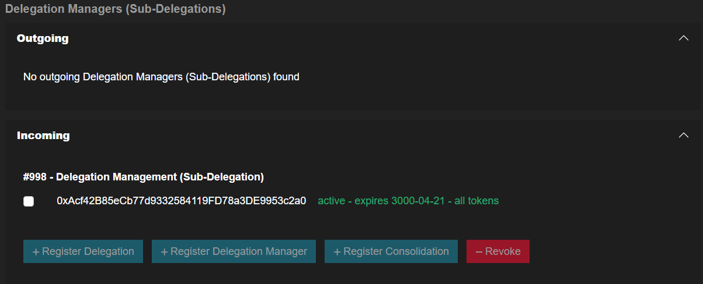
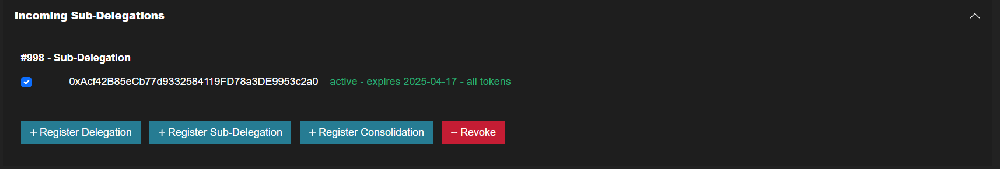
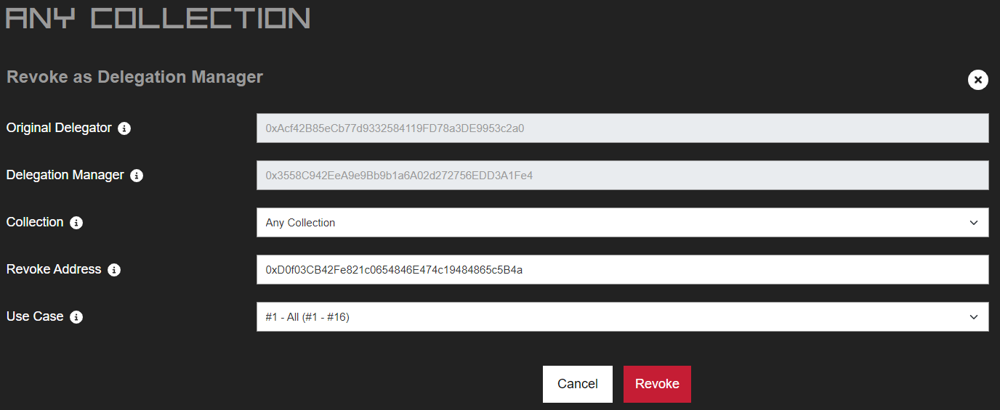

How to Revoke a Delegation Using Delegation Management (Sub-Delegation) Rights?
-
Go to the Delegation Center Section and click the 'View/Manage' button for the desired collection
(e.g., ‘Any Collection’ for all collections or a specific collection such as 'The Memes Collection')
-
In the Delegation Managers (Sub-Delegations) area, check for incoming Sub-delegations. If any are
present, related actions will be displayed within that area.

-
To revoke a delegation using Delegation Management (Sub-Delegation) rights, select the delegator address for
which you want to revoke the delegation and click the 'Revoke' button.

-
Complete the Revoke as Delegation Manager form:
-
Select the collection for which you want to revoke the delegation on behalf of the delegator.
- Enter the wallet address.

- Click the 'Revoke' button and execute the transaction.